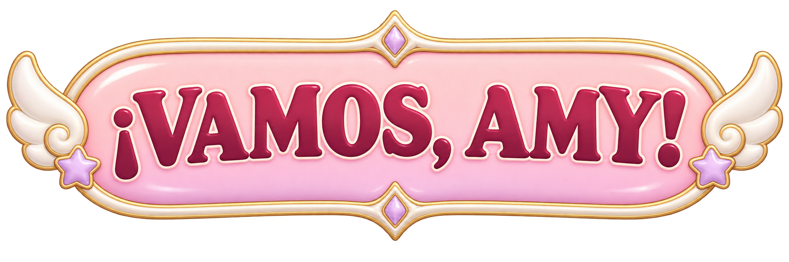
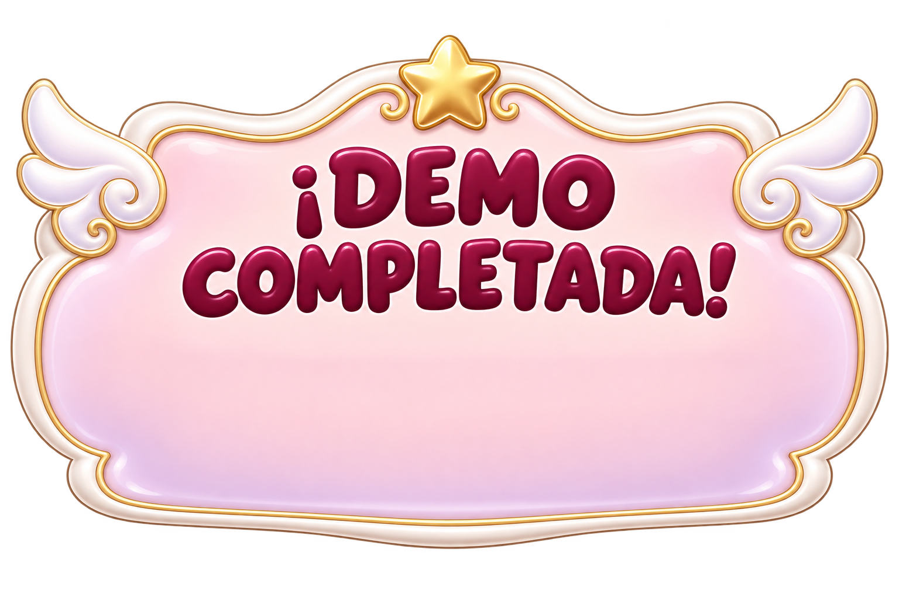
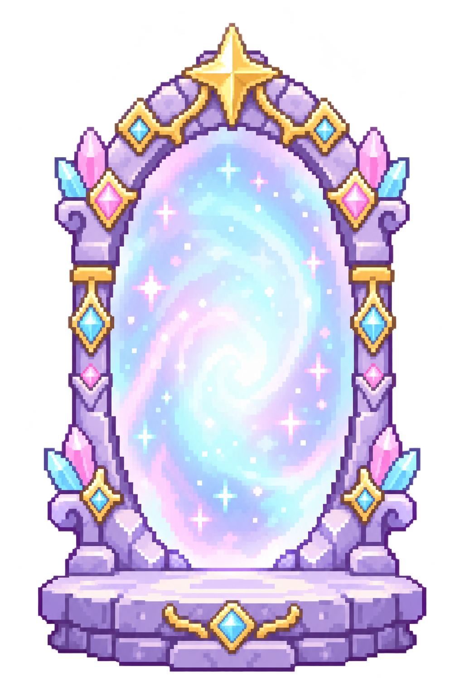

Amy — Beyond the Skies
Catálogo de animaciones, efectos y recursos de la demo. Las secuencias se repiten aquí para inspeccionarlas; en el juego se reproducen según el estado del personaje.
Inicio, final y meta
Inicio

Demo completada

Portal de llegada

Sonidos